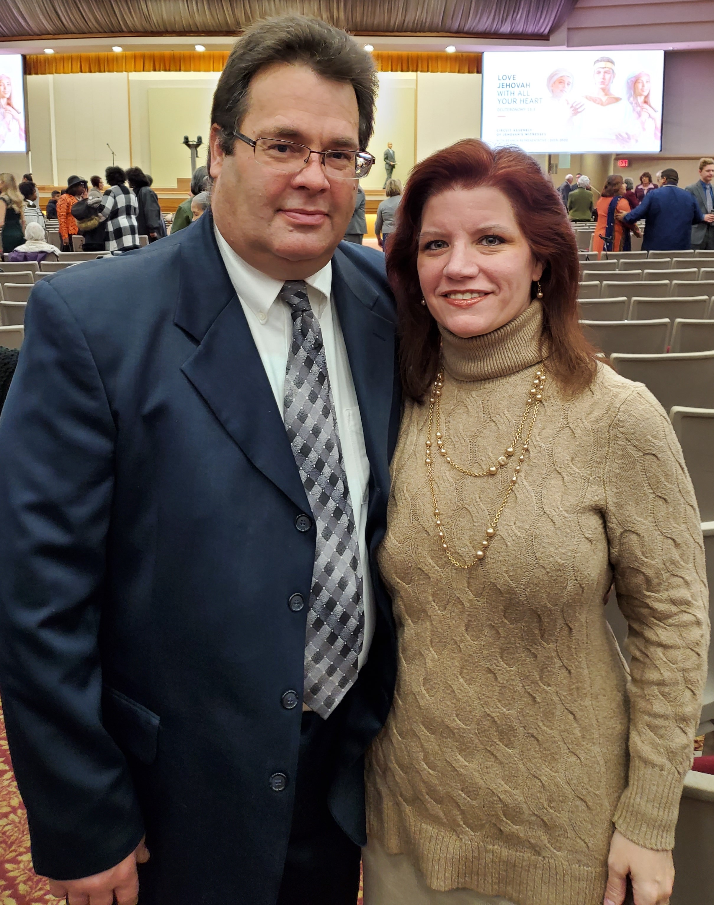
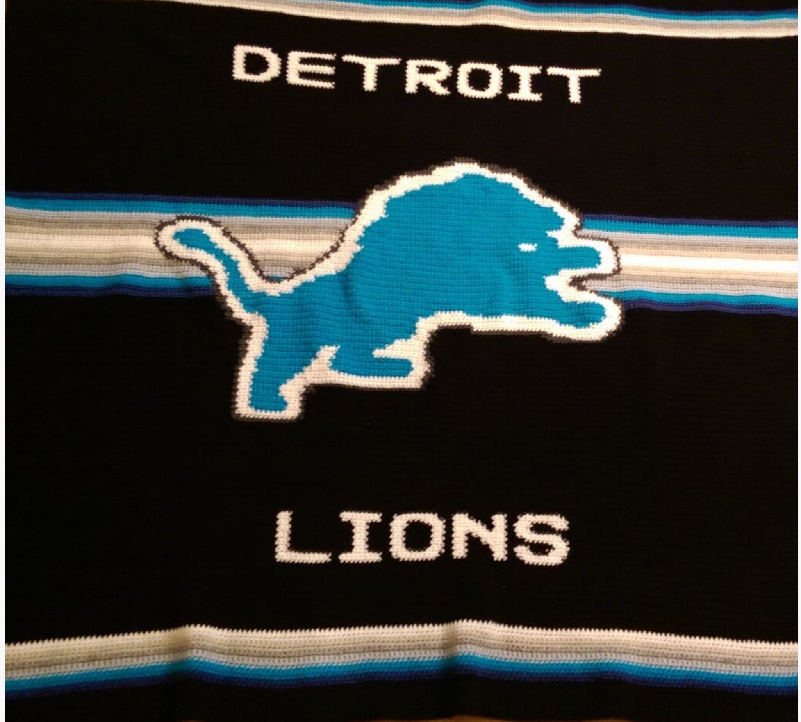

Barbara J. Szabo
Introduction
I am an electrical designer with experiance in a variety of electrical applications from commercial to utility/industrial. I also have some engineering experiance and am gearing my career more towards the engineering aspect of electrical design in power generation and distribution. I am looking to stay with in the utility and/or commercial industries and utilize my combined design/engineering experiences to explore new opportunites.
In line with my goal of transitioning towards more engineering in my career I've been pursuing a degree in Electrical Engineering with a focus on power systems and distribution. This type of focus falls in line with the experience I already have and the direction I want to go.
Work Experience
My work experience includes layouts of lighing, power, conduit, grounding, equipment and fire detection/notification systems. I utilize the NEC, NFPA, Life Safety Code, and numerous other building codes as well as company and client standards in creating the designs for the required systems.
Additionally, I've done power alanlysis, fault current calculations, and lighitng level calculations. These are done in order to determine designs meet requirements and/or to determine what may be needed in order to complete a proper design.
Below are a couple of snapshots of portions of lighting designs I've worked on, one at a plant and one at a casino.
Some clients I have worked on designs for:
- ComEd * BGE * Lake Fenton High School
- MEC * Duke Energy * Flint Schools
HOBBIES
I enjoy cross-stitch, crotcheting, and knitting as relaxing activities during those rare moments I have to sit and relax. I like to find patterns or have patterns made from phots. The Detroit Lions blanket I made for my brother-in-law is an example of one of the crotchet blankets I've made.
Additionally, I love to read who-done-it type crime and mystery novels. One of my favorite authors is Patricia Cornwell. Her Kay Scarpetta series has had me intrigued for over 20 years. I also very much enjoy the Kinsey Millhone series by Sue Grafton. Sadly, Ms. Grafton is now deceased prior to publizing the Z title of the series (this is an alphabet based series starting with "A is for Aliby"). I've yet to complete either series but am in progress. Other authors I favor are Robin Cook, James Patterson, Tess Gerrisen, and Stephen King. I also have a whole slew of books waiting in my nook library from authors I want to start reading if I ever get enough time.
Exercise is also something I enjoy. Jogging on my treadmill and using my bowflex help me to not just keep in shape but relieve stress. Sadly, I don't get to do much of this when I'm both working full time and taking classes. Work and school take up much of my time, and then I have family and theocratic responsibilities as well.